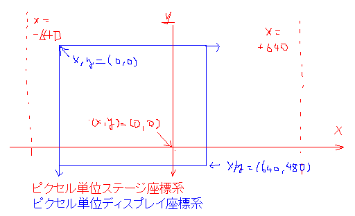

座標系について
通常（キャラクターの座標等の）座標はピクセル単位で指定します。これを仮に「ピクセル単位座標系」と呼びます。
この座標系では画面（ウインドウ）の端から端までの長さが、タテ480、ヨコ640となります。また、タテ(特に断りがない場合タテをy軸とします。業界によっては違うかもしれませんが) は画面下向きがプラス方向です。同様に、ヨコ(ヨコはx軸とします) は右向きがプラス方向です。
ゲーム中でキャラクタの座標を指定する場合、ステージの中心が(x,y)=(0,0)になります。また現在はステージの幅が固定で、x=±640がステージ端になっています。この座標系（仮に「ピクセル単位ステージ座標系」といいます）上で座標を指定した場合、ゲーム中の現在の表示中心に基づいて平行移動され、画面上に表示されます。
またもうひとつ、「ディスプレイ座標系で描画する」という指定がありますが、この場合画面左上が座標(0,0)、右下が(640,480)になります。これを仮に「ピクセル単位ディスプレイ座標系」と呼びます。

D3Dを直接使って独自描画をする場合は座標系に注意して座標指定を行ってください。
D3Dを使用した場合軸の方向は上記の座標系と同様ですが、値の長さが異なります。画面（ウインドウ上）で端から端までの長さがタテ 2.0、ヨコ 2.0x320.0/240.0 となります。これを仮に「float単位座標系」と呼びます。（これは下記のD3DTS_PROJECTIONマトリクスによって決定されています）
座標変換のマトリクス指定には D3DTS_WORLD , D3DTS_VIEW , D3DTS_PROJECTION のステージを使用しますが、このうちD3DTS_VIEW , D3DTS_PROJECTION は直接変更しないでください（変更してもいいですが、かならず事前にマトリクスを取得して描画後に元に戻してください）。 D3DTS_WORLD のみを使って、ローカル→ワールド座標変換を行ってください。
D3DTS_VIEW はシステム関数を使って２種類の変換マトリクスを設定できます。（カメラの位置みたいなもんです）
DI_FUNCTIONS_D.settrans にTRUEを指定した場合、「float単位ステージ座標系」みたいなものになります。この座標系ではステージ中心が(0,0)、ステージ端がx=±2.0x320.0/240.0 になります。
同様にFALSEを指定した場合、「float単位ディスプレイ座標系」的な座標系になり、画面左上が(0,0)、画面右下が(2x320.0/240.0,2) になります。
ぶっちゃけ、大きさが狂ったら240で割り、縦横比が狂ったら xに 320/240 を掛けてみて ってことです。
ここまでの説明はすべて z=0 の場合の説明です。以下z。
z (画面奥行きです) 座標に関しては、通常キャラクターが表示される位置が z=0 付近で、画面奥の方向がプラス方向です。 飛び道具やエフェクト等、zが0付近にある場合ではあまり問題にならないかもしれませんが、ステージを3D描画したりする場合、Zを激しく0から離すときには適当に画角による補正を行ってください。奥のほうに描くとちっちゃくなるですからね。
厳密な計算をしたい人は本体ソースを参考にしてください。
もどる